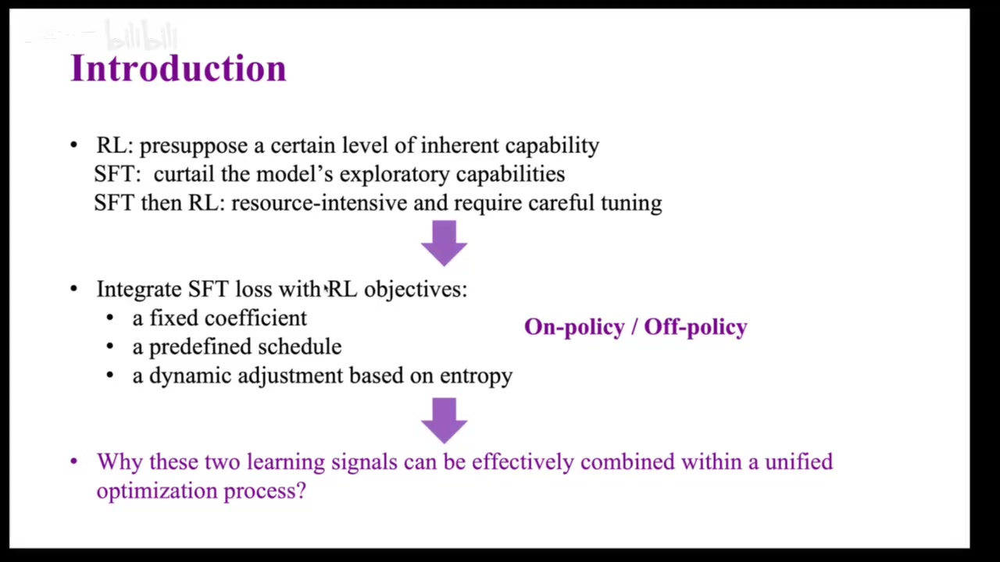
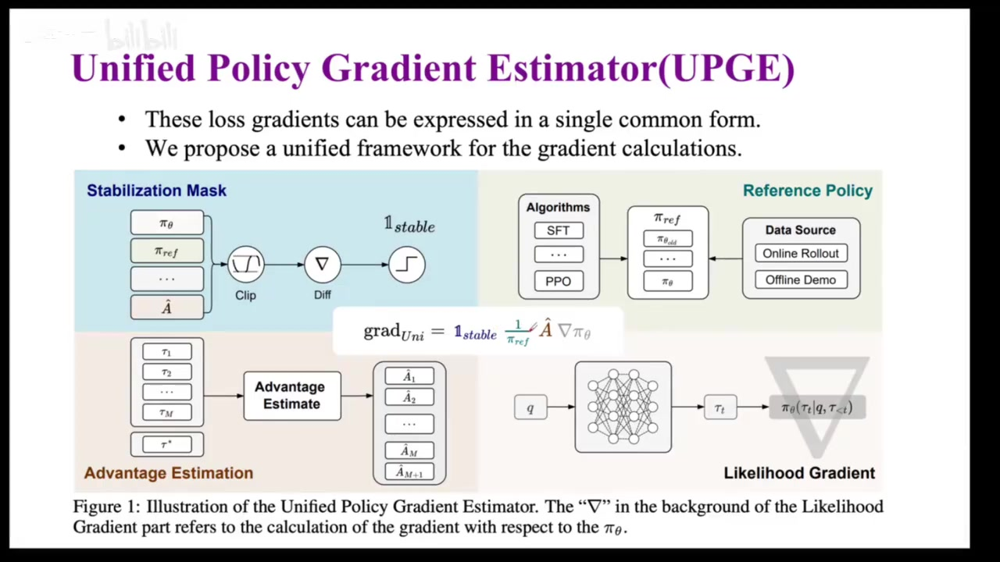
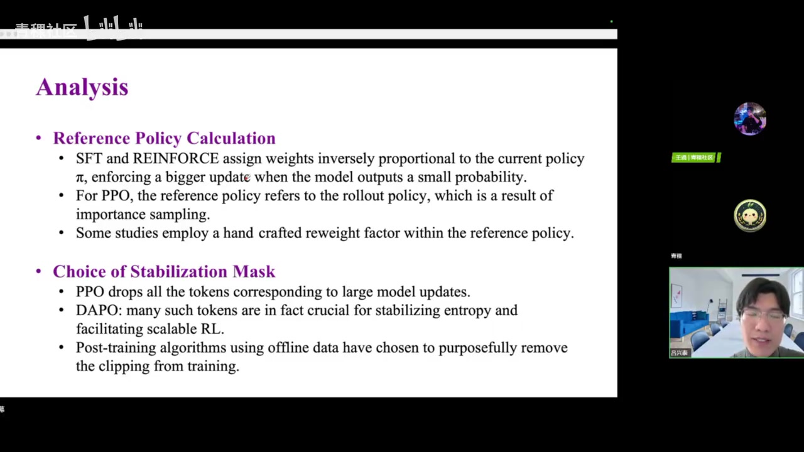
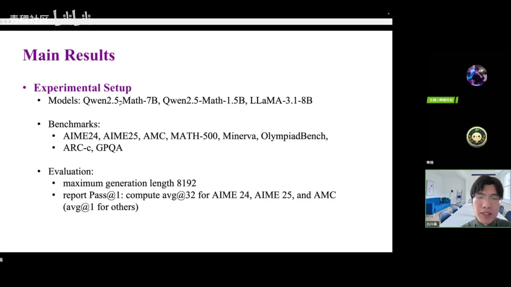
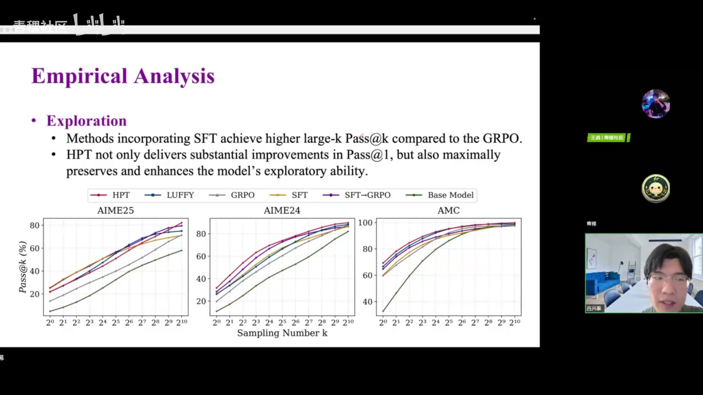
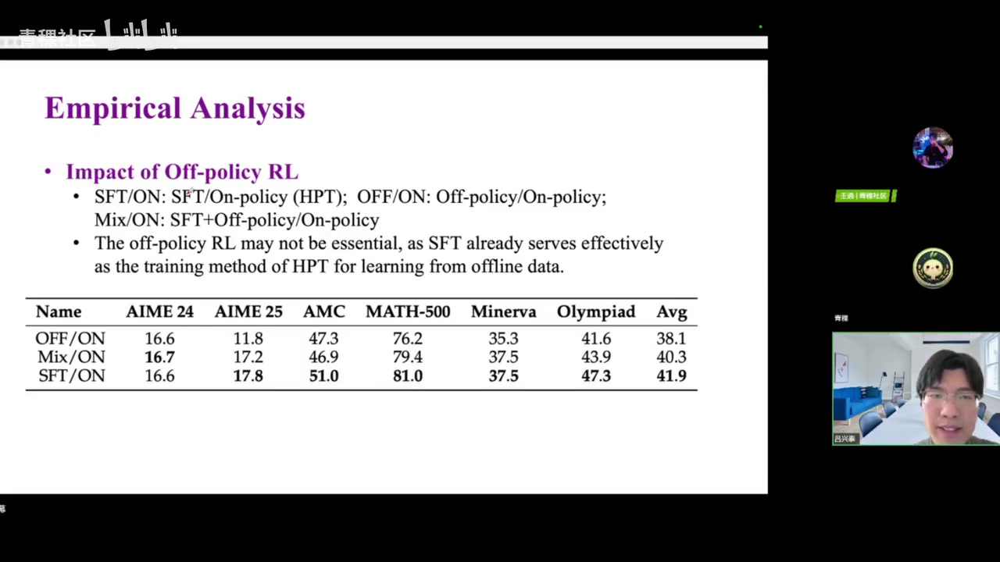

01｜SFT 与 RL 的互补张力
SFT 快速注入目标分布但可能收窄探索；RL 能重组已有能力并保留探索，却依赖足够强的起始策略和可验证奖励。
01:30–07:40 常见流程是先 SFT 再 RL，但资源消耗高且两阶段难精确对齐。已有混合方法用固定系数、预设 schedule 或熵指标动态调权，却仍缺少统一解释。

SFT
高效学会指定答案与格式；风险是过拟合示范、损伤分布外能力。
RL
利用可验证反馈提升推理与泛化；风险是弱模型采不到正样本。
顺序式 SFT→RL
工程成熟，但需要两套资源与精细阶段对齐。
混合式训练
允许按样本与训练状态选择信号，目标是同时保留能力与探索。
02｜UPGE：用四个部件统一后训练梯度
SFT、PPO、GRPO 与 off‑policy 目标在 loss 形式上差异很大，但其策略梯度都可写成同一骨架。

| 部件 | 作用 | 典型差异 |
|---|---|---|
| Stabilization mask | 限制过大更新、保证稳定 | PPO clipping、离线方法可能不设 mask |
| Reference policy | 修正数据由谁采样 | 当前策略、旧策略、示范分布或常数 |
| Advantage estimator | 决定哪些 token/轨迹应被提高或压低 | 结果奖励、偏好、SFT 的隐式常数优势 |
| Likelihood gradient | 把动作概率变化传回参数 | 所有方法共享的基础梯度项 |
18:00–31:50 统一并不意味着算法等价：它们共享优化骨架，却在参考策略、优势估计与稳定掩码上体现不同归纳偏置。这个视角允许在同一批训练中有原则地选择信号，而不是机械叠加 loss。

03｜HPT：按实时表现选择 SFT 或 RL
如果模型在当前问题上几乎不会，先给示范；如果已经能采到足够正确轨迹，再用 RL 扩展与强化。
32:00–36:20 Hybrid Post‑Training 先对每个问题采样多次并用验证器计算通过率，再与阈值 γ 比较。低于阈值时启用 SFT，高于阈值时启用 RL；实际实现把两个系数设为 0 或 1，形成样本级路由。

04｜实验：性能之外还要看探索
HPT 的价值不仅体现在 pass@1，也体现在大采样预算下是否仍保留可发现正确答案的能力。
36:20–53:50 实验覆盖 Qwen2.5‑Math 7B/1.5B 与 Llama3.1‑8B，包含分布内外数学基准。报告称 HPT 在多数组合上优于纯 SFT、纯 GRPO 及完整的“SFT 后再 GRPO”流程。

Pass@k 分析强调：SFT 数据可引入模型原本不易采到的新轨迹，提高大 k 下的覆盖；RL 则在已有可行区域内强化策略。训练可视化显示，二者混合能在学习正确模式时保留更丰富输出。

05｜边界与研究价值
统一框架的价值不是宣称“所有算法一样”，而是提供一套拆解与重组后训练信号的语言。
| 限制 | 原因 | 影响 |
|---|---|---|
| 需要高质量示范 | SFT 分支依赖外部正确答案 | 开放任务成本高 |
| 需要可靠验证器 | RL 与路由都要判断结果 | 主观任务难应用 |
| 阈值依赖模型与数据 | 不同规模模型最优 γ 不同 | 需要校准与消融 |
| 结果集中在数学推理 | 可验证、易采样 | 跨代码/Agent 仍需验证 |
问答还讨论了 PPO 替代 GRPO、难度课程、off‑policy 数据与非推理任务。演讲者强调很多结论仍需更公平的基线和更多任务验证。
证据边界：本文忠实整理视频中的讲解、论文图表与演讲者判断，并非对论文复现实验或独立同行评审。自动转录中的专名已结合幻灯片校正；仍不确定的缩写和动态数字应以原论文或项目页面为准。